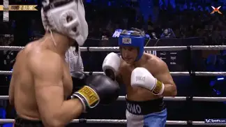
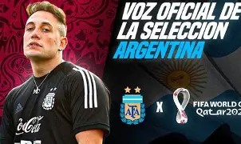

SUS LOGROS Y MOMENTOS MÁS IMPORTANTES
Un recorrido por los acontecimientos que marcaron la carrera de Momo y su crecimiento dentro del mundo del streaming.

Una carrera llena de momentos importantes
Desde sus primeros años en internet hasta convertirse en uno de los creadores de contenido argentinos más reconocidos.
Línea de tiempo
1º 2013 Comienzos en el streaming
Comienza a realizar transmisiones en vivo y a construir su comunidad.
2º Crecimiento en Twitch
Su comunidad crece y comienza a participar en proyectos y colaboraciones con otros creadores.
3º Participación en La Velada del Año

Participa en el evento de boxeo organizado por Ibai Llanos.
4º Cobertura del Mundial de Qatar 2022

Realiza contenido y transmisiones relacionadas con el Mundial de fútbol.
Grandes logros de su carrera
Un camino que continúa
Su trayectoria demuestra cómo un creador de contenido puede crecer, participar en grandes eventos y construir una comunidad a través de internet.